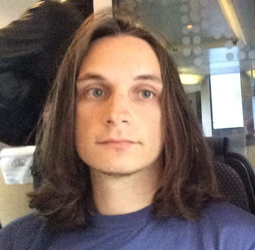

 This is the personal webpage for Greg Kondyukov. I'm a recent university graduate looking to either continue my academic education or gain experience in professional software development.
My research interests are focused around computational physics and mathematical modeling. Specifically in non-linear systems, cosmology, general relativity, and many-body problems.
Currently I am pursuing a Masters degree in Computer Science at Florida State University, with coursework concentrating in Machine Learning and ancilliary exposure to Cybersecurity.
At Florida State University I received a dual degree in Physics and in Applied and Computational Mathematics. For Physics I was given Honors in the Major for completing an honors thesis in computational nuclear physics under the advisement of Dr. Alexander Volya.
Beside physics and mathematics study, I also took a large breadth of computer science courses which were mainly taught in C++. From the coursework I have a thorough understanding of object-oriented database programming, algorithms, and low-level programming.
Currently I am a fresh addition to Dr. Sonia Haiduc's reasearch group at the Department of Computer Science. The group's research focus is in Software Engineering, specifically looking into document tracibility and machine learning applications. My involvement is currently focused on using Natural Language Processing to classify user submitted reports in Bug Tracking Systems.
From May 2014 to December 2015 I conducted reseach under Dr. Alexander Volya that I used to develop my honors thesis which was successfully defended in May 2015. However, I decided to stay at the university for an additional semester during which time I expanded upon the original work by developing methods for complex resonance calculations.
From August 2012 to May 2014 I was employed at the FSU Department of Physics via the Federal Work-Study program. During this time I worked in developing automation software for scientific equipment, process control mechanisms for National Instruments equipment, and FPGAs.
Here's a link to my CV.
For the 2014-2015 academic year I was the Vice President of the Florida State University chapter of the Society of Physics Students. Along with my collegues, I worked to build and maintain a community for undergraduates interested in physics. We also gave talks at local events for people of all ages to help develop an interest in science.
In addition to working on research, I spent every summer at Florida State Univeristy mentoring incoming physics students.
github.com/kondyukov is my currently underused github page. Though it is where this page is currently hosted.
Eigen is a fantastic C++ linear algebra library. It was immensly helpful in developing my undergraduate thesis.
Proton Mail is an excellent encrypted email provider located in Switzerland.
Dwarf Fortress is the most open ended game so far released. The learning curve is tough but incredibly rewarding.
Archive.org has a large number of classic games to play.
Wumbo is a nonsense word from the show about everybody's favourite animated sea sponge. For your education, here's the inception of the eponymous word itself.
It made for a short, catchy, and (most importantly) available domain name. Normally I have a home server connected to this domain, but my current internet provider restricts those sort of things.